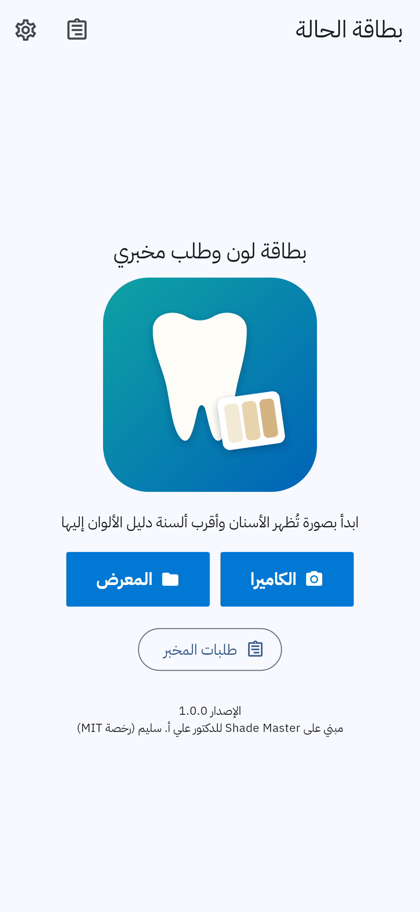
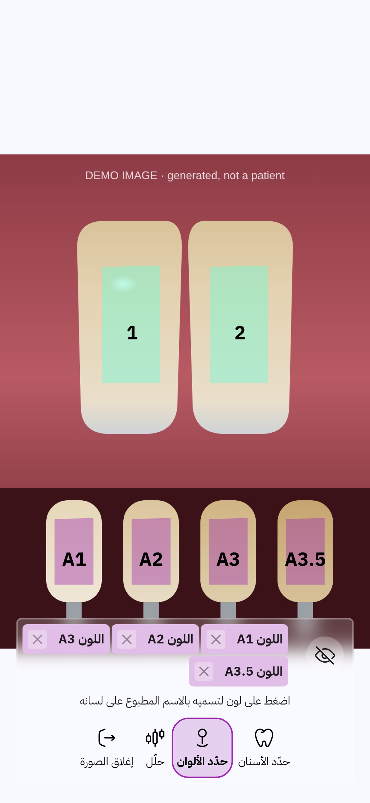
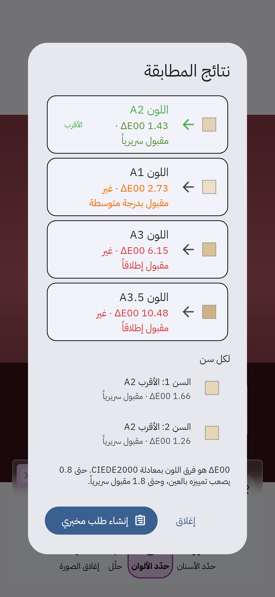
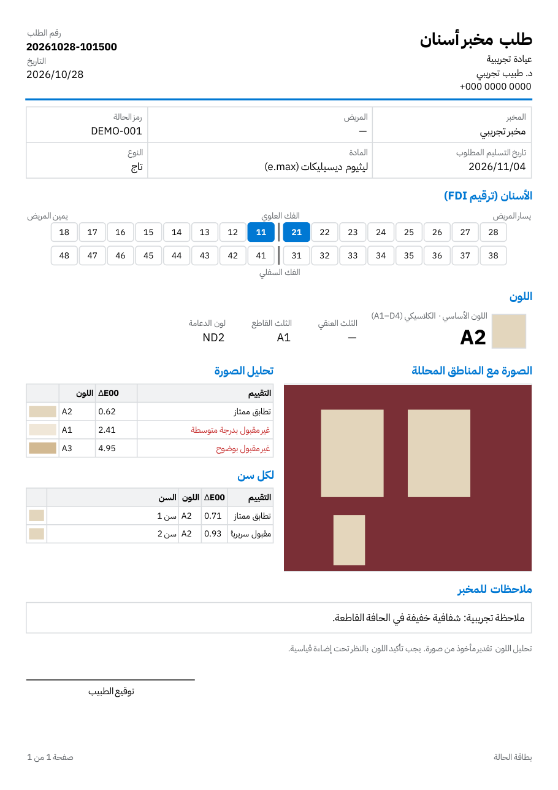

كيف يعمل
- صوّر الأسنان مع ألسنة دليل الألوان تحت الإضاءة نفسها.
- حدّد مناطق الأسنان والألسنة بإصبعك وسمِّ كل لسان باسمه، مثل A2.
- يرتّب التطبيق الألوان من الأقرب بمعادلة CIEDE2000، مع تقييم سريري لكل فرق.
- أنشئ طلب المخبر: الأسنان بترقيم FDI، ونوع التعويض، والمادة، والألوان، والملاحظات، ثم شاركه PDF.
كل البيانات تبقى على الجهاز. التحليل تقدير من صورة ويجب تأكيده بالنظر. الصور المعروضة مأخوذة من صورة تجريبية مولّدة وليست لمريض.